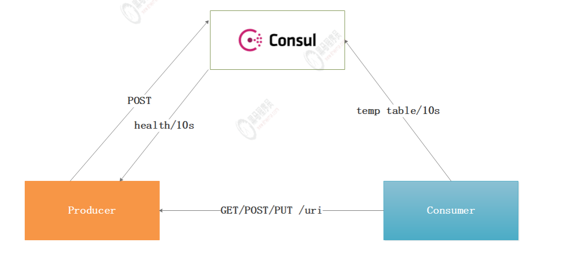

Consul介绍
Consul 是 HashiCorp 公司推出的开源工具，用于实现分布式系统的服务发现与配置。与其它分布式服务注册与发现的方案，Consul 的方案更“一站式”，内置了服务注册与发现框 架、分布一致性协议实现、健康检查、Key/Value 存储、多数据中心方案，不再需要依赖其它工具（比如 ZooKeeper 等）。使用起来也较 为简单。Consul 使用 Go 语言编写，因此具有天然可移植性(支持Linux、windows和Mac OS X)；安装包仅包含一个可执行文件，方便部署，与Docker 等轻量级容器可无缝配合。
特性
- 服务发现
- 健康检查
- Key/Value 存储
- 多数据中心
- 社区活跃
优势
- 使用 Raft 算法来保证一致性, 比复杂的 Paxos 算法更直接. 相比较而言,zookeeper 采用的是 Paxos, 而 etcd 使用的则是 Raft。
- 支持多数据中心，内外网的服务采用不同的端口进行监听。 多数据中心集群可以避免单数据中心的单点故障,而其部署则需要考虑网络延迟,分片等情况等。 zookeeper 和 etcd 均不提供多数据中心功能的支持。
- 支持健康检查。 etcd 不提供此功能。
- 支持 http 和 dns 协议接口。 zookeeper 的集成较为复杂, etcd 只支持http 协议
- 官方提供 web 管理界面, etcd 无此功能。
- 综合比较, Consul 作为服务注册和配置管理的新星, 比较值得关注和研究
- 提供了rest api 便于集成：https://www.consul.io/api-docs/index
角色
- client: 客户端, 无状态, 将 HTTP 和 DNS 接口请求转发给局域网内的服务端集群。
- server: 服务端, 保存配置信息, 高可用集群, 在局域网内与本地客户端通讯, 通过广域网与其它数据中心通讯。 每个数据中心的 server 数量推荐为 3 个或是 5 个。
Consul 客户端、服务端还支持夸中心的使用，更加提高了它的高可用性。
Consul 基础架构
术语
agent
组成 consul 集群的每个成员上都要运行一个 agent，可以通过 consul agent 命令来启动。agent可以运行在 server 状态或者 client 状态。自然运行在 server 状态的节点被称为 server 节点；运行在 client 状态的节点被称为 client 节点
server 节点
负责组成 cluster 的复杂工作（选举server 自行选举一个 leader、状态维护、转发请求到 leader），以及 consul 提供的服务（响应RPC 请求），以及存放和复制数据。考虑到容错和收敛，一般部署 3 ~ 5 个比较合适。
client 节点
负责转发所有的 RPC 到 server 节点。本身无状态，且轻量级，因此，可以部署大量的client 节点。
数据中心
虽然数据中心的定义似乎很明显，但仍有一些细微的细节必须考虑。我们将一个数据中心定义为一个私有、低延迟和高带宽的网络环境。这不包括通过公共互联网的通信，但是为了我们的目的，单个EC2 区域内的多个可用区域将被视为单个数据中心的一部分。
另外：
server 自行选举一个 leader。虽然 Consul 可以运行在一台 server ，但是建议使用 3 到 5 台来避免失败情况下数据的丢失。每个数据中心建议配置一个server 集群。
在基础设施中需要发现其他服务的组件可以查询任何一个 Consul 的server 或者agent，Agent 会自动转发请求到 server。
每个数据中心运行了一个 Consul server 集群。当一个跨数据中心的服务发现和配置请求创建时，本地 Consul Server 转发请求到远程的数据中心并返回结果。
如何实现服务注册和发现

工作原理：
- 当Producer启动的时候，会向Consul发送一个post请求，并向Consul传输自己的IP和Port。
- Consul 接收到Producer的注册后，每隔10s（默认）会向Producer发送一个健康检查的请求，检验Producer是否健康。
- 当Consumer以Http的方式向Producer发起请求，会先从Consul中拿到一个存储服务IP和Port的临时表，从表中拿到Producer的IP和Port后再发送请求。
- 该临时表每隔10s会更新，只包含有通过了健康检查的Producer。
Consul安装
下载consul服务
1 | # 从官网下载最新版本的Consul服务 |
启动consul服务
1 | // ip1 |
参数解释：
- -bootstrap-expect:集群期望的节点数，只有节点数量达到这个值才会选举leader。
- -server： 运行在server模式
- -client：consul服务侦听地址，这个地址提供HTTP、DNS、RPC等服务，默认是127.0.0.1所以不对外提供服务，如果你要对外提供服务改成0.0.0.0
- -data-dir：指定数据目录，其他的节点对于这个目录必须有读的权限
- -node：指定节点的名称
- -bind：为该节点绑定一个地址
- -config-dir：指定配置文件，定义服务的，默认所有一.json结尾的文件都会读
- -enable-script-checks=true：设置检查服务为可用
- -datacenter: 数据中心名称
-join：加入到已有的集群中
其他命令
1 | 查看集群成员 |
Consul 的 WebUI 控制台